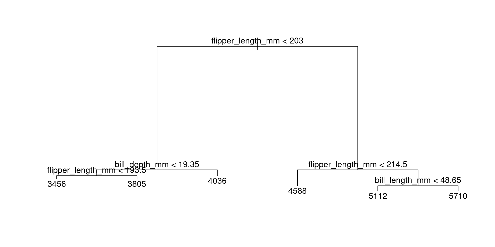
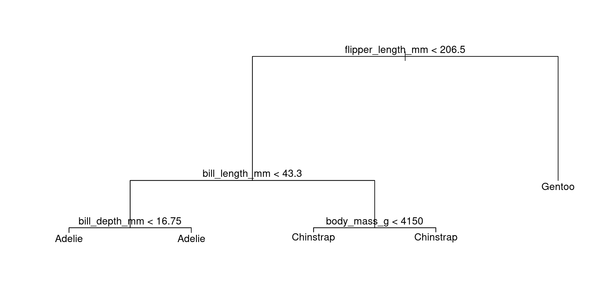
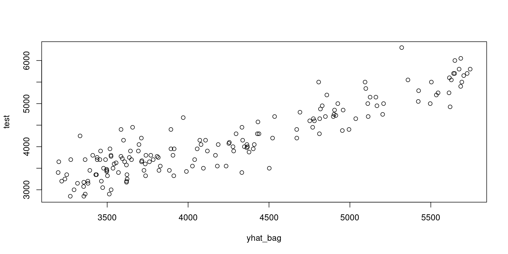
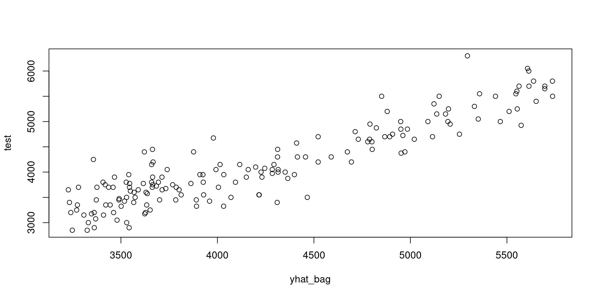

library(tree)
library(palmerpenguins)
library(tidyverse)
df <- penguins |> drop_na()
train <- sample(1:nrow(df), nrow(df)/2)
tree_penguin <- penguins |> tree(body_mass_g ~ flipper_length_mm + bill_length_mm + bill_depth_mm,
data = _,
subset = train)Tree-Based Methods
Trees
Trees
A Statistical tree will partition a region from a set of predictor variables that will predict an outcome of interest.
Trees will split a region based on a predictors ability to reduce the overall mean squared error.
Trees are sometimes preferred to linear models due to the visual explanation of the model.
Trees

Fitting a Tree
- Start with the entire dataset and define the maximum number of regions or number of observations per region of the tree.
- Calculate the MSE of the dataset.
- For each potential split, calculate the MSE. Choose the split that results in the lowest overall MSE.
- Create a node in the tree with the selected split as the split criterion.
- Repeat steps 2-4 for each subset, stopping if the maximum number of regions has been reached or if the subset size is too small.
Pruning
Pruning
Pruning is the process that will remove branches from a regression tree in order to prevent overfitting.
This will result in a subtree that has high predictive power with no overfitting.
Due to the computational burden of pruning, it is recommended to implement Cost Complexity Pruning.
Cost Complexity Pruning
Let \(\alpha\) be nonnegative tuning parameter that indexes a sequence of trees. Identify the tree that reduces:
\[ \sum^{|T|}_{m=1}\sum_{i:\ x_i \in R_m}(y_i-\hat y_{R_m})^2 +\alpha|T| \]
\(|T|\): Number of terminal nodes
\(R_m\): rectangular region containing data
\(y_i\): observed value
\(\hat y_{R_m}\): predicted value in rectangular region.
Pruning Algorithm
- Conduct a fitting algorithm to find the largest tree from the training data. Stop once every region has a small number of observations.
- Apply the cost complexity pruning algorithm to identify the best subset of trees.
- Use a K-fold cross-validation approach to choose the proper \(\alpha\). For each kth fold:
- Repeat steps 1 and 2.
- Evaluate the mean squared prediction error as a function of \(\alpha\).
- Average the results for each value of \(\alpha\). Pick the \(\alpha\) that minimizes the error.
- Return the subtree with the selected \(\alpha\) from step 2
Classification Trees
Classification Trees
Classification Trees will construct a tree that will classify data based on the region (leaf) you land. The class majority is what is classified.
Criterion: Gini Index
The Gini Index is used to determine the error rate in classification trees:
\[ G = \sum^K_{k=1} \hat p_{mk}(1-\hat p_{mk}) \]
Regression Trees
Regression Trees
Regression trees will construct a tree and predict the value of the outcome based on the average value of the region (leaf).
Trees are constructed by minimizing the residual sums of square.
Bagging
Bagging
When splitting the data to train and test data sets, the construction of the tree suffers from high variance.
This is due to splitting the data in a random way. One training data set will lead to different results from another training data set.
To improve performance, we implement a Bootstrap Aggregation (Bagging) technique.
Bagging will produce a forest of trees to classify a new observation.
Bagging Algorithm
Given a single training data set:
Sample from the data with replacement.
Build a tree from the sampled data:
\[ \hat f^{*b}(x) \]
Repeat the process B times (B=100)
Compute the final average for all predictions:
\[ \hat f_{bag}(x)=\frac{1}{B}\sum^B_{b=1}\hat f^{*b}(x) \]
Classification
To classify an observation, you can record the classification of each \(b\) tree. Then classify an observation by majority rule.
Variable Importance
With the implementation of Bagging, you lose interpretability from the original tree due to the forest.
However, we can compute which variables reduced the RSS or Gini Index for all the trees. The variables with the largest reduction are considered important.
Random Forests
Random Forests
Random Forests is an extension of Bagging, where a forest is generated from a bootstrap-based approach. However, when making a split, a random set of predictors (m<p) are chosen for the split, instead of the full set p.
This will ensure that trees are unique, uncorrelated.
It ensures that no one predictor will have all the power and lower the variance.
Boosting
Boosting
Boosting is a mechanism where a final tree is built slowly from smaller trees using the residuals.
This ensures a tree is built from a slow process and prevents overfitting.
This is done to improve prediction capabilities.
Algorithm
Set \(\hat f(x) = 0\) and \(r_i = y_i\) for all \(i\) in the training set
For \(b=1, 2, \ldots, B\) repeat:
Fit tree \(\hat f^b\) with \(d\) splits (\(d+1\) terminal nodes) to the training data \((X,r)\)
Update \(\hat f\)
\[ \hat f(x) \leftarrow \hat f(x) + \lambda\hat f^b(x) \]
Update residuals
\[ r_i \leftarrow r_i - \lambda\hat f^{b}(x_i) \]
Output boosted model:
\[ \hat f(x) = \sum^B_{b=1} \lambda \hat f^b(x) \]
R Code
Regression Trees
Code
plot(tree_penguin)
text(tree_penguin, pretty = 0)
Classification Trees
library(tree)
library(palmerpenguins)
library(tidyverse)
library(magrittr)
df <- penguins |> drop_na()
train <- sample(1:nrow(df), nrow(df)/2)
tree_penguin_class <- df |> tree(species ~ body_mass_g + flipper_length_mm + bill_length_mm + bill_depth_mm,
data = _,
subset = train)Code
plot(tree_penguin_class)
text(tree_penguin_class, pretty = 0)
Pruning
attach(df)
tree_penguin_cv <- cv.tree(tree_penguin)Code
tree_penguin_cv#> $size
#> [1] 6 5 4 3 2 1
#>
#> $dev
#> [1] 24079306 26138047 30484059 30549626 38718249 112604795
#>
#> $k
#> [1] -Inf 1967559 3060054 3537257 9664694 75001877
#>
#> $method
#> [1] "deviance"
#>
#> attr(,"class")
#> [1] "prune" "tree.sequence"Code
plot(tree_penguin_cv$size,
tree_penguin_cv$dev, type = "b")
prune_best <- prune.tree(tree_penguin, best = 7)
plot(prune_best)
text(prune_best, pretty = 0)
Bagging Regression Trees
library(randomForest)
library(palmerpenguins)
library(tidyverse)
library(magrittr)
penguins <- penguins |> drop_na()
train <- sample(1:nrow(penguins), nrow(penguins)/2)
bag_penguins <- penguins |> randomForest(body_mass_g ~ bill_depth_mm + bill_length_mm + flipper_length_mm,
data = _,
subset = train,
mtry = 3,
importance = T)Code
yhat_bag <- predict(bag_penguins, newdata = penguins[-train , ])
test <- penguins[-train , ]$body_mass_g
plot(yhat_bag, test)
Bagging Classification Trees
Code
bag_penguins <- penguins |> randomForest(species ~ body_mass_g + bill_depth_mm + bill_length_mm + flipper_length_mm,
data = _,
subset = train,
mtry = 4,
importance = T)Code
yhat_bag <- predict(bag_penguins, newdata = penguins[-train , ])
test <- penguins[-train , ]$species
table(yhat_bag, test)#> test
#> yhat_bag Adelie Chinstrap Gentoo
#> Adelie 72 5 0
#> Chinstrap 1 30 0
#> Gentoo 0 0 59Random Forests Regression Trees
bag_penguins <- penguins |> randomForest(body_mass_g ~ bill_depth_mm + bill_length_mm + flipper_length_mm,
data = _,
subset = train,
mtry = 2,
importance = T)yhat_bag <- predict(bag_penguins, newdata = penguins[-train , ])
test <- penguins[-train , ]$body_mass_g
plot(yhat_bag, test)
Random Forests Classification Trees
bag_penguins <- penguins |> randomForest(species ~ body_mass_g + bill_depth_mm + bill_length_mm + flipper_length_mm,
data = _,
subset = train,
mtry = 2,
importance = T)yhat_bag <- predict(bag_penguins, newdata = penguins[-train , ])
test <- penguins[-train , ]$species
table(yhat_bag, test)#> test
#> yhat_bag Adelie Chinstrap Gentoo
#> Adelie 72 5 0
#> Chinstrap 1 30 0
#> Gentoo 0 0 59Boosting Regression Trees
library(gbm)
boost_penguin <- gbm(body_mass_g ~ bill_depth_mm + bill_length_mm + flipper_length_mm,
data = penguins[train , ],
distribution = "gaussian",
n.trees = 5000,
interaction.depth = 4)yhat_boost <- predict(boost_penguin,
newdata = penguins[-train , ],
n.trees = 5000)
test <- penguins[-train , ]$body_mass_g
plot(yhat_bag, test)